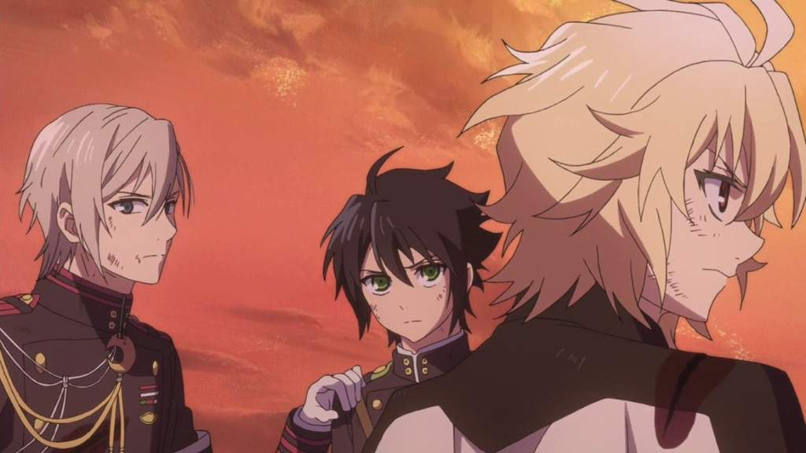
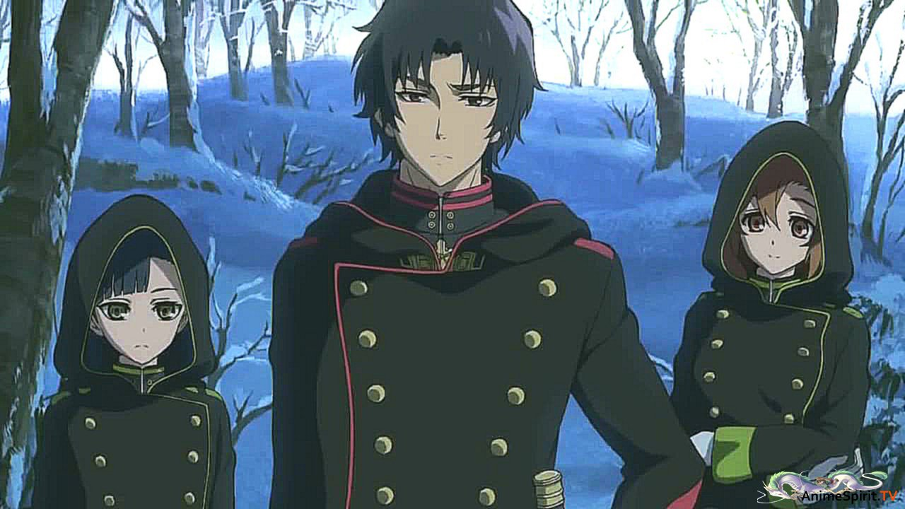

Совет Основателей
Совет основателей (Progenitor Council) - это группа прародителей высокого ранга - королей вампиров стран. Главой совета является Урд Гиллес, как Второй основатель и сильнейший (исключая Сайто и Первого Основателя) вампир.
Целями Совета Основателей является обсуждение важных административных вопросов. Так же, основна из их передовых целей - уничтожение Императорской армии и уничтожение любой организации, которая проводит эксперименты над людьми. Они время от времени проводят встречи, чтобы принимать решения и обсуждать важные вопросы. Встреча также может быть проведена из-за чрезвычайной ситуации.
Секта Хакуя
Секта Хакуя (Братство Тысячи Ночей) - религиозная организация, одна из крупнейших в Японии. Занималась незаконными исследованиями и экспериментами над людьми. Была создана Сайто за много лет до начала манги
На протяжении многих лет Секта Хакуя с Орденом Имперских Демонов, контролирующих власть в стране. Однако, после Второй мировой войны секта получила поддержку США, и с тех пор стали доминирующим синдикатом в Японии. Секта Хакуя имела глубокие связи с политическим днищем Японии. Ее власть была огромной. Мало кто из обычных людей вообще знал о ней, Секта правила страной из тени. Она не остановится ни перед чем, чтобы получить власть и влияние, которые включают убийство, похищение, начало войн, эксперименты над людьми и прочее.
Секта Хакуя была известна созданием детских домов. Однако,это был очередной способ найти испытуемых для своих экспериментов. Когда они нашли подходящего испытуемого, они убивали родителей и приводили ребенка в один из своих детских домов для изнурительных экспериментов. В частности, их интересовало "Серафим конца времен". Другие эксперименты включают в себя предоставление своим солдатам возможности стрелять и манипулировать цепями из своих тел и создавать всадников Апокалипсиса.
Имперские демоны
Орден Имперских Демонов - один из двух самых могущественных магических синдикатов во всей Японии (вторая - Секта Хакуя), возглавляемый кланом Хираги.
Наряду с Братством тысячи ночей, Орден имперских демонов является одной из двух самых мощных магических организаций во всей Японии. В течение многих лет они боролись друг с другом за контроль над властью в стране. Однако, после Втором Мировой Секта Хакуя получила финансовую поддержку и сотрудничество от США. Из-за этого Братство заняло передовые позиции, что и поставило его в звание первого магического синдиката Японии.  Имперские демоны организовали эксперимент, плодом которого стали Махиру Хираги и Шиноа Хираги. В дальнейшем действия Имперских Демонов послужили началу Катастрофы и уничтожению людей.
Имперская Луна
Орден Имперской Луны - военная организация, созданная кланом Ичиносэ, специализирующаяся на на боевом стиле, который сочетает в себе заклинание с мастерством владения мечом, интегрируя магию непосредственно в приемах ближнего боя. Соперничают с семьей Хираги.
Клан Ичиносэ отделился от клана Хираги около 500 лет назад, образовав Орден Императорской Луны. С тех пор отношения между двумя сектами были напряженными. Глен Ичиносэ должен был стать следующим лидером организации, поэтому на него возлагались большие надежды. Его отец, Сакаэ Ичиносэ, возглавил Орден Имперской Луны до его подчинения клану Хираги.